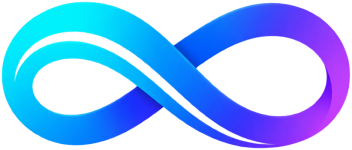

{{spot}}

CAPITÃO IA
—
{{local}}
{{led}}{{liveLabel}}
REG. {{reg}}
CAPITÃO
IA
CÉREBRO OPERACIONAL DA EMBARCAÇÃO
{{sweep}}
{{b.ico}}
{{b.chip}}
{{b.n}}
{{b.eq}}
CAPITÃO
IA
{{b.icoSm}}
{{b.n}}
NOVA
{{m.k}}
{{m.text}}
{{m.src}}
{{x.l}} ›
{{orbit}}{{pensandoTxt}}
{{attachLabel}}
✕
Pergunta
{{m.ico}}
{{m.l}}
{{conv.l}}
{{c.l}}
{{status}}
SOS